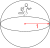
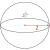

Project 3.7.1 Calculating Effects of Radiation.
The purpose of this project is to build a mathematical model for a situation. We will focus on the structure of the equations, and what they tell us about the mathematical relationships of the data. The emphasis is not on actual numbers.
For an unrelated example of a model, consider dropping a ball off a cliff. Ignoring air resistance, the ball’s position can be modeled by the equation \(h = kt^2\text{,}\) where \(t\) is the time and \(h\) is the height of the ball. There are some other numbers that go in there, but what is changing is the time and position (height). That equation framework is the mathematical model.
You may find this to be a challenging project. Do the best you can and use your own common sense. Math should make sense! After you finish this, please read back over your work and make sure your answers are logically consistent.
Remember that you can ask questions and meet up with a tutor, but you should not be looking up answers or just writing down what someone else says. Do not let someone else copy your answers. That is academic dishonesty and you should not allow it. Your work should be your own.
For this project, imagine that you are working with radioactive material. Since we do not want you harmed by radiation, we should understand how time and distance impacts the radioactive dose. (You should also be behind material that shields you from the radiation, but that math is more complicated, so we’ll focus on time and distance.)
(a)
As your time near a radioactive source increases, does the radiation level in your body increase, decrease, or stay the same?
(b)
Do you think the relationship between time and dosage is linear or not linear?
(c)
Let \(E\) stand for radiation exposure, \(t\) stand for length of time of exposure, and \(k\) be the constant of variation. Write an equation representing the relationship between \(E\text{,}\) \(t\text{,}\) and \(k\text{.}\)
(d)
Examine the above equation you just wrote.
-
Is it linear or non-linear? This should match your answer to Task 3.7.1.b.
-
What in the equation indicates it is linear or non-linear? That is, how did you know the answer to part Item 1?
(e)
We have determined the relation between time and radiation exposure. Next we determine the relation between distance to radiation source and radiation exposure. These can be different.
Radiation radiates outwards from a source evenly in all directions (like light radiates out evenly from a lightbulb) unless it is obstructed by something (like a lead shield). Imagine a radiation source floating in the center of a sphere. All parts of the sphere would be getting hit with an equal amount of radiation. We are going to figure out the radiation for a given patch of area on this sphere.
It will be helpful to know the following formula: \(A=4\pi r^2\text{,}\) where A is the surface area of the sphere and r is the radius of the sphere.
If a sphere had a radius of 2 m, what is the surface area of the sphere? Remember to include units. Leave your answer in terms of \(\pi\) (meaning it should look like \(\pi\) m2).
(f)
A very rough approximation of the surface area of the front of a person is 1 m2. We will consider what percent of the surface area of a sphere this is.

A person barely fits in the top half of a sphere that is shown with radius 1.

A person is less than half the height of the top half of a sphere that is shown with radius 2.
(i)
What percent of the surface area of a sphere of radius 1 is 1 m2?
(ii)
What percent of the surface area of a sphere of radius 2 is 1 m2?
(iii)
Why does the change in percent make sense? See Figure 3.7.2.
(iv)
In general as the radius increases what will the percent of the surface that is 1 m2 do? Increase/remain the same/decrease?
(g)
Note that the amount of radiation (energy) remains the same regardless of the radius of the sphere. That is a sphere with radius 1 and surface area \(4\pi\) has the same energy as a sphere with radius 2 and surface area \(16\pi\text{.}\)
(i)
If the radiation is being emitted at an intensity of \(5\) Sieverts per hour (Sv⁄h), what amount of radiation will be hitting our 1 m2 person who is at a distance of 1 m from the source?
(ii)
If the radiation is being emitted at an intensity of \(5\) Sieverts per hour (Sv⁄h), what amount of radiation will be hitting our 1 m2 person who is at a distance of 2 m from the source?
(iii)
In general as the distance (radius) increases what happens to the amount of radiation absorbed by the person do? Increase/remain the same/decrease?
(h)
If the radiation is being emitted at an intensity of \(x\) Sieverts per hour (Sv⁄h), what amount of radiation will be hitting our human-sized cutout on the surface of the sphere? Your answer should be in terms of \(x\text{.}\)
(i)
Complete the following table. Notice that you already found the values for the first row.
|
Radius of circle
|
Ratio of 1 m2 to surface area
|
|
2 m
|
|
|
3 m
|
|
|
4 m
|
|
|
5 m
|
|
|
r m
|
(j)
Graph the points in Table 3.7.3.
Hint.
Your horizontal axis (radius) should be from 0 to 5. Because the output numbers are small, we need a scale that matches. Make the units on the vertical scale 0.002.
(k)
Does the data represented in the table above represent a linear relationship or a non-linear relationship? Give a reason to justify your answer.
(l)
Is the relationship between distance and the potential amount of radiation hitting the person better modeled by direct variation or inverse variation?
(m)
Consider the numbers 16, 36, 64, 100. These numbers are significant in mathematics. What is the pattern or significance of these numbers? (Note: you only see these numbers if you completed the table in terms of \(\pi\) (do not multiply and round). Go back and fix your table if you do not see these numbers.)
(n)
As the radius of the sphere increases, does the level of radiation hitting our person-sized cutout increase or decrease? Does this increase or decrease change linearly (at a constant rate) or non-linearly (at a changing rate)? Circle the appropriate answer.
As the radius of the sphere increases, the radiation intensity is increasing / decreasing (circle one) in a linear / non-linear (circle one) fashion.
(o)
The sphere with a floating radiation source is a good model for us to use when thinking through how distance impacts radiation levels because we can disregard complicating factors like the walls, floor, and ceiling of the room as long as a person is still directly exposed to the radiation source. Still, the relationship you found between radius and radiation holds true. With that in mind, answer the following questions.
Let \(I\) stand for radiation experienced by the person, \(r\) stand for distance, and \(k\) be the constant of variation. Write an equation of variation representing the relationship between \(I, r\text{,}\) and \(k\text{.}\)
Hint.
Look back at your recent answers and the table you built. Is the formula you wrote logically consistent with these answers? That is, if you plugged in the \(r\) with some constant value \(k\text{,}\) would you get the right answer for \(I\text{?}\)
(p)
Let \(R\) stand for radiation exposure, \(t\) stand for length of time of exposure, \(r\) stand for distance, and \(k\) be the constant of variation (this \(k\) may be different from your \(k\) in Task 3.7.1.c or Task 3.7.1.n). Write an equation of joint variation representing the relationship between \(R, r, t\text{,}\) and \(k\text{.}\)
Hint.
Is your answer consistent with your answers to #3 and #13?
(q)
Use the equation you just built. If you are 5 meters away for 3 hours, how long would you stay at 2 meters away to receive the same radiation dose?
(r)
At the end of it all, if you find yourself next to a radioactive source, what do you do? Full points will be awarded for all reasonable answers that address both time and distance.
![Runestone Academy logo]()
![MathJax logo]()